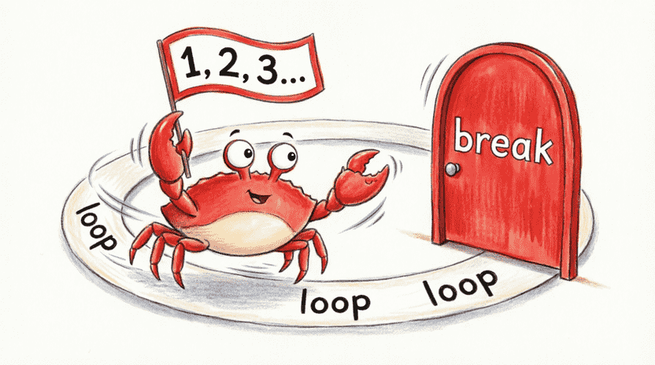
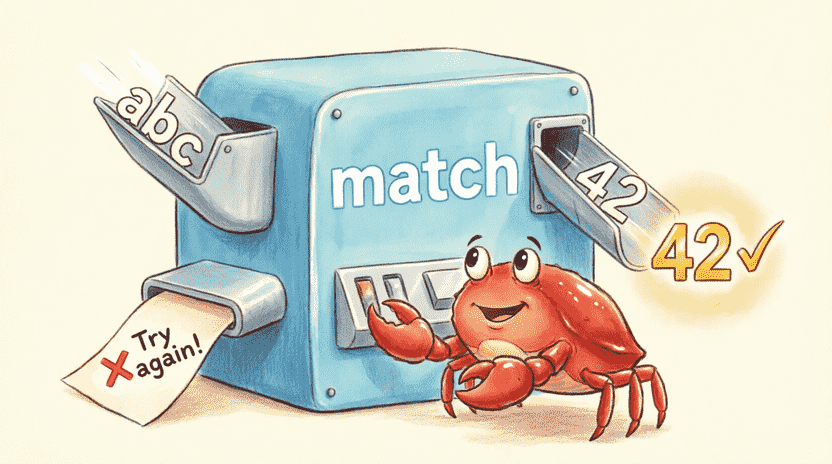
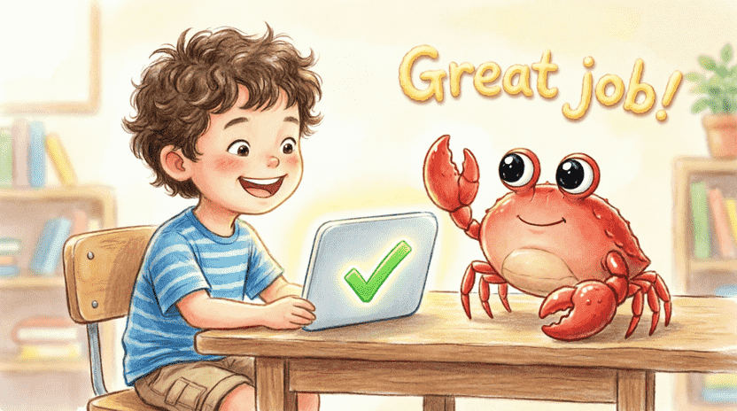

🦀 The Land of Rust: Ferris the Crab’s Space Adventures
Chapter 2: The Lost Star Game (Variables, Input & Conditions)
📋 Chapter Outline:
2.1. The Mystery: A Hidden Star
2.1.1. The Story: Ferris and the Lost Star
During his space travels, Ferris found a glowing star that can grant one wish! 🌟 But this playful crab decided to hide it in a secret locker aboard his ship.
Ferris looks at you with big, curious eyes and says: 🦀 “I picked a secret number between 1 and 100. If you guess it in the fewest tries, the star is yours! Tell me a number, and I’ll tell you to go higher or lower.”
This is the classic “Guess the Number” game. Today, we’ll build it in Rust so you can play against the computer!
2.1.2. Random Numbers Are Like Rolling Dice
Computers are logical machines. They can’t truly “pick randomly” on their own. But we can use a clever math formula that acts just like rolling dice! We call these pseudo-random numbers.
In Rust, engineers built a ready-to-use toolbox called rand that does this for us. We just need to add it to our project.
![[Illustration: A cartoon scene of Ferris holding a glowing cosmic die. Floating around it are numbers like 42, 7, and 99. The background shows a cozy spaceship control panel with soft blinking lights. Style: playful, vibrant children’s book illustration, warm lighting.]](assets/images/2.1.png)
2.1.3. Adding the rand Crate
Open your terminal and create a new project:
cargo new guess_the_number
cd guess_the_number
Now we need to tell cargo that we want the rand toolbox. Open Cargo.toml and add this line under [dependencies]:
[dependencies]
rand = "0.8.5"
Your file should look like this:
[package]
name = "guess_the_number"
version = "0.1.0"
edition = "2021"
[dependencies]
rand = "0.8.5"
0.8.5 is the version we want. The next time you run cargo run, Cargo will automatically download it from the internet. (Make sure you’re connected!)
2.1.4. Bringing the Dice Box into Our Code
Now that the toolbox is added, we need to tell our program which tool to use. At the top of src/main.rs, add:
#![allow(unused)]
fn main() {
use rand::Rng;
}Then, inside main(), we create our secret number:
#![allow(unused)]
fn main() {
let secret_number = rand::thread_rng().gen_range(1..=100);
}Let’s break this magic spell down:
🔹 rand::thread_rng() → Builds a dice-rolling machine just for our program.
🔹 .gen_range(1..=100) → Tells it to pick a number between 1 and 100. (..= means both 1 and 100 are included.)
💡 Quick test: Let’s print it now just to see it work (we’ll delete this line later so the game stays fair):
#![allow(unused)]
fn main() {
println!("Secret number (for testing only): {}", secret_number);
}2.2. Memory Boxes (Variables)
In programming, when we need to remember something, we use a variable. Think of a variable as a small box inside the computer’s memory that holds a number, a word, or a true/false value.
2.2.1. Making a Box with let
In Rust, we create a box using the word let:
#![allow(unused)]
fn main() {
let x = 5;
}This means: “Make a box named x and put the number 5 inside it.”
In our game, secret_number was already created. But we also need a box for the player’s guess:
#![allow(unused)]
fn main() {
let mut guess = String::new();
}String::new() creates an empty text box. (String means a piece of text that can grow as long as needed.)
2.2.2. Why Boxes Are Locked by Default (Immutability)
One of Rust’s superpowers is this: When you create a box, its contents are locked by default. This is called immutability.
Example:
#![allow(unused)]
fn main() {
let x = 5;
x = 6; // ❌ Error! You can't change `x`.
}The compiler quickly says:
error[E0384]: cannot assign twice to immutable variable `x`
Think of it like a padlocked chest! Unless you hand over the mut key, nobody can change what’s inside. This prevents silly mistakes from breaking your program.
2.2.3. Opening the Box with mut
Sometimes we do need to change what’s inside. When creating the box, we add the word mut (short for mutable):
#![allow(unused)]
fn main() {
let mut y = 10;
y = 20; // ✅ Now it's totally fine!
}In our game, guess needs to hold different answers from the player, so we must create it with let mut.
![[Illustration: An educational cartoon showing two labeled boxes on a wooden desk. Box 1: “let x = 5” (secured with a small padlock). Box 2: “let mut y = 10” (open, with a tiny wrench inside). Ferris stands beside them, pointing at the difference. Style: bright, clear, infographic-style children’s illustration.]](assets/images/2.2.png)
2.2.4. Our Friendly Guide: Compiler Errors
If you get an error in Rust, don’t worry! The Rust compiler acts like a kind teacher. It shows exactly where you slipped up and often suggests a fix. For example, if you forget mut, it says:
help: consider making this binding mutable: `mut guess`
Remember: Errors aren’t enemies. They’re your helpers! 🤝
2.3. Listening to You (Reading Input)
Now we need to ask the player to type their guess and read it.
2.3.1. The Input Magic Spell
First, at the top of the file, add the input/output library:
#![allow(unused)]
fn main() {
use std::io;
}(If you already added use rand::Rng;, you’ll now have two use lines.)
Inside main(), write:
#![allow(unused)]
fn main() {
io::stdin().read_line(&mut guess).expect("Failed to read input");
}2.3.2. Breaking Down the Spell
This line might look scary, but let’s open it piece by piece:
🔹 io::stdin() → “Pick up the phone and connect to the keyboard.”
🔹 .read_line(&mut guess) → “Wait until the player types something and presses Enter. Pour whatever they typed into the guess box.”
🔹 .expect("Failed to read input") → “If something breaks the connection, show this message and stop safely.”
2.3.3. Why &mut guess? (Handing Over the Key)
The &mut symbol means temporary key. The read_line function wants to write inside our guess box. We give it permission to do that, but we don’t give away ownership of the box. For now, just remember: &mut means “You’re allowed to change what’s inside this box.” (We’ll dive deeper into these permissions in Chapter 4!)
![[Illustration: Ferris handing a glowing key labeled “&mut” to a small, friendly robot labeled “read_line”. The robot stands next to an open box named “guess”. Background: a soft, tech-themed workspace. Style: metaphorical, warm children’s book illustration.]](assets/images/2.3.png)
2.4. Type Conversion (Text to Number)
2.4.1. The Problem: Text vs. Numbers
When the player types 42, the computer sees it as text "42". But secret_number is a real number. We can’t compare apples to oranges! We must convert the text into a number.
2.4.2. Cleaning Up with trim()
When you press Enter, the computer secretly adds a newline character \n at the end. The trim() function sweeps away these extra spaces:
#![allow(unused)]
fn main() {
let clean_guess = guess.trim();
}2.4.3. Converting Text to Number with parse()
Now the text is clean. With parse(), we say “Please turn this into a number”:
#![allow(unused)]
fn main() {
let guess: u32 = guess.trim().parse().expect("Please type a valid number!");
}- 🔹
parse()→ Tries to turn text into a number. - 🔹
: u32→ Tells the compiler: “I want a positive whole number.” - 🔹
expect()→ If it fails, stops the program with our message. (Later, we’ll learn how to handle this gracefully without stopping!)
2.4.4. Shadowing: Same Name, New Job
Notice we used let guess again? In Rust, this is called shadowing. The old String box steps aside, and a new u32 box takes its place with the exact same name. It’s super handy because we don’t need to invent long names like guess_as_number!
2.5. If Not, Then What? (if / else)
2.5.1. Comparing the Guess to the Secret
The game logic is simple:
- 🔸 If guess < secret → Say “Go higher!”
- 🔸 If guess > secret → Say “Go lower!”
- 🔸 If guess == secret → Say “You won!”
2.5.2. Writing if / else if / else
#![allow(unused)]
fn main() {
if guess < secret_number {
println!("❄️ Too low! Go higher!");
} else if guess > secret_number {
println!("🔥 Too high! Go lower!");
} else {
println!("🏆 You guessed it! The star is yours!");
}
}2.5.3. Comparison Operators in Real Life
| Operator | Meaning | Real-Life Example |
|---|---|---|
< | Less than | My age < My dad’s age |
> | Greater than | Dad’s height > My height |
== | Equal to | 2 + 2 == 4 |
!= | Not equal to | 3 != 4 |
<= | Less than or equal | Fingers on one hand <= 5 |
>= | Greater than or equal | Passing score >= 50 |
2.5.4. Why = and == Are Different
🔹 = means Assignment: “Put the right side into the left box.” (let x = 5;)
🔹 == means Comparison: “Are these two things equal?” (if x == 5)
If you accidentally use = inside an if, the compiler will complain because it’s looking for a question, not an instruction!
![[Illustration: A split-screen educational graphic. Left: a balancing scale showing “x = 5” with a loading arrow. Right: a magnifying glass examining “x == 5” with a green checkmark. Ferris stands in the middle explaining. Style: clean, modern educational illustration, bright colors.]](assets/images/2.4.png)
2.6. The Repeat Loop (loop)
2.6.1. The Problem: The Game Ends Too Soon
Right now, the program asks once and quits. We want it to keep asking until the player guesses correctly!
2.6.2. Meet loop (The Never-Ending Circle)
loop creates a circle. Whatever you put inside { } repeats forever, unless you press the escape button:
#![allow(unused)]
fn main() {
loop {
println!("This prints forever!");
}
}(To stop it, you’d press Ctrl+C. But we’ll escape properly using break.)
2.6.3. Putting Our Guess Code Inside loop
We wrap all the “ask & check” code inside loop. Each lap, it asks for a new guess.
2.6.4. Escaping with break
To jump out of the loop, we use break. When the guess matches:
#![allow(unused)]
fn main() {
if guess == secret_number {
println!("🏆 You guessed it! The star is yours!");
break; // 🚪 Exit the loop!
}
}2.6.5. Adding a Guess Counter
Let’s count how many tries it takes:
#![allow(unused)]
fn main() {
let mut count = 0;
loop {
count += 1; // Short for: count = count + 1
// ... rest of the code
}
}count += 1 is the fastest way to add one!

2.7. Gentle Error Handling (match)
2.7.1. What If the Player Types Words?
If someone types "hello", our expect will crash the game. That’s not fun! Instead, let’s say “Please type a number!” and ask again.
2.7.2. Using match to Save the Game
Instead of expect, we’ll use match. Think of match as a sorting machine: if the conversion works, it hands back the number. If it fails, it shows a friendly message and tries again:
#![allow(unused)]
fn main() {
let guess: u32 = match guess.trim().parse() {
Ok(num) => num,
Err(_) => {
println!("❌ Please enter only numbers! ❌");
continue;
}
};
}- 🔹
Ok(num)→ Success! Grab the number and give it toguess. - 🔹
Err(_)→ Any error? Run the code inside this block. - 🔹
continue→ Means “Skip the rest of this lap and jump back to the top of the loop.”
2.7.3. In Simple Words
“Try to turn the text into a number. If it works, great! Keep going. If it fails, show a polite message and ask again without crashing.” Now the game never freezes! 🛡️

2.8. Summary & Challenge
2.8.1. What You Learned
In this chapter, you discovered:
- ✅ How to generate random numbers with
rand - ✅ How to create memory boxes with
letandlet mut - ✅ How to read player input with
stdin().read_line() - ✅ How to clean and convert text using
trim()andparse() - ✅ How to make decisions with
if / else - ✅ How to repeat actions with
loopand escape withbreak - ✅ How to handle errors gracefully with
matchandcontinue
2.8.2. Big Challenge: The “Close Call” Hint
Now add a pro feature: when the player’s guess is within 5 numbers of the secret, print: "🔥 You're getting close! 🔥"
💡 Hint: Calculate the distance. You can use as i32 to convert to a signed number and .abs() for absolute value:
#![allow(unused)]
fn main() {
let diff = (guess as i32 - secret_number as i32).abs();
if diff < 5 && guess != secret_number {
println!("🔥 You're getting close! 🔥");
}
}🎮 Final Game Code (Ready to Run)
use std::io;
use rand::Rng;
fn main() {
println!("🎲 Welcome to the Guess the Number Game! 🎲");
let secret_number = rand::thread_rng().gen_range(1..=100);
let mut count = 0;
loop {
count += 1;
println!("Please guess a number between 1 and 100: ");
let mut guess = String::new();
io::stdin()
.read_line(&mut guess)
.expect("Failed to read input");
let guess: u32 = match guess.trim().parse() {
Ok(num) => num,
Err(_) => {
println!("❌ Please enter only numbers! ❌");
continue;
}
};
if guess < secret_number {
println!("⬆️ Too low! Go higher!");
} else if guess > secret_number {
println!("⬇️ Too high! Go lower!");
} else {
println!("🏆 You guessed it! The star is yours! 🏆");
println!("✨ You won in {} tries! ✨", count);
break;
}
}
}Run it with cargo run and challenge your friends!
In the next chapter, we’ll learn how to wrap repetitive code inside functions so our programs stay tidy, short, and professional. 🚀
🔚 End of Chapter 2
